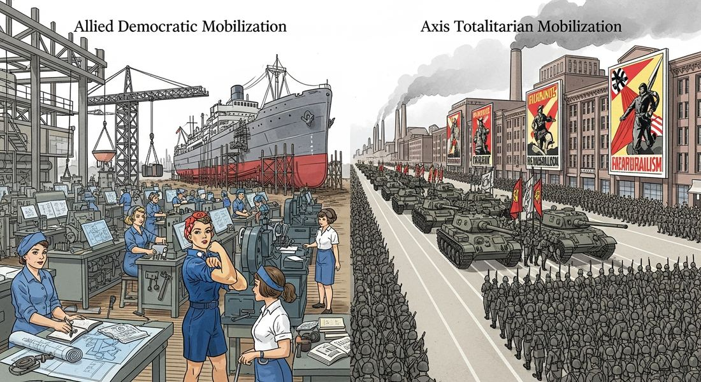
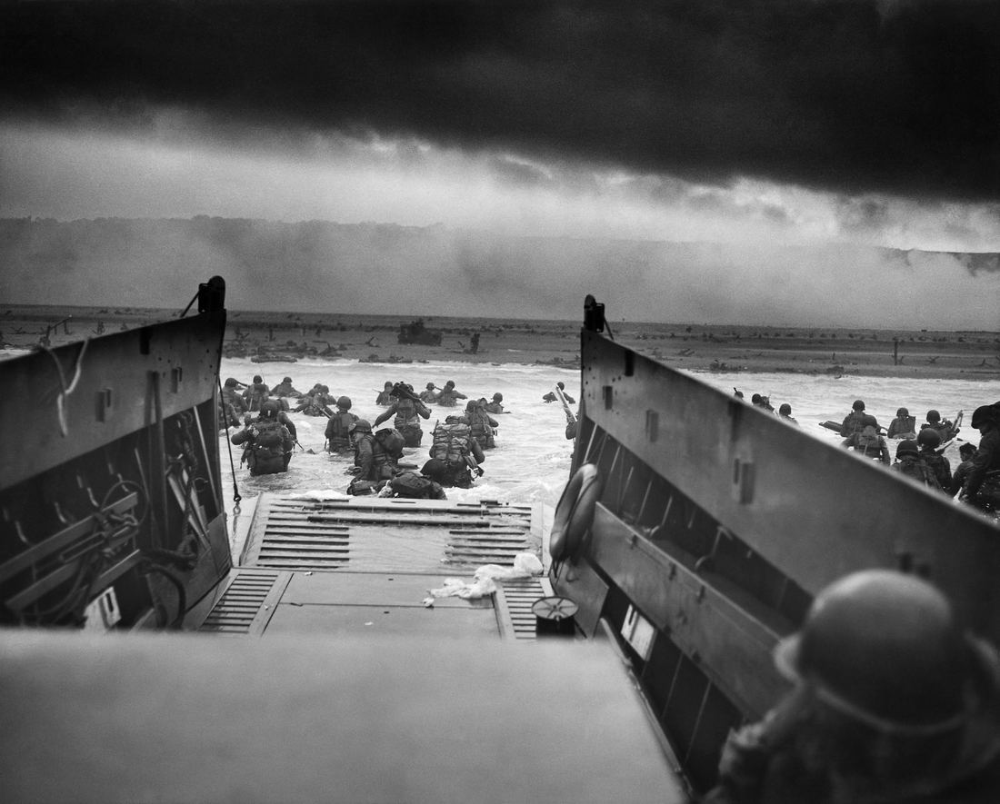

7.7 Conducting World War II
- LO-A: WWII was the second total war — bigger and deadlier than WWI — All the methods of WWI total war (propaganda, conscription, industrial mobilization, colonial recruitment) returned in WWII at even greater scale. The U.S. alone converted its entire auto industry to tank and plane production within months of Pearl Harbor. Women entered industrial workforce in large numbers (Rosie the Riveter). The war killed approximately 70–85 million people — more than any conflict in history. AP exam comparison: democratic vs. totalitarian mobilization — The CED's illustrative examples are: western democracies (Britain under Churchill, U.S. under Roosevelt) vs. totalitarian states (Germany under Hitler, USSR under Stalin). Key differences: democracies used propaganda and voluntary enlistment supplemented by conscription; totalitarian states used ideology (fascism/communism) plus terror to enforce participation, extending control into all aspects of daily life. New military technology: atomic bomb changes everything — WWII introduced strategic bombing of civilian cities (Blitz, Dresden, Tokyo firebombing), the atomic bomb (Hiroshima and Nagasaki, August 1945), radar, jet engines, V-2 rockets, and advances in amphibious warfare. The atomic bomb specifically represents a qualitative leap: for the first time, one weapon could destroy an entire city, making total war potentially civilization-ending. Ideology as a weapon: fascism and communism mobilize total states — Totalitarian states didn't just conscript armies — they used fascism (Germany) and communism (USSR) to mobilize all state resources, justified repression of any dissent, and erased the line between military and civilian life. Nazi Germany used antisemitic ideology to justify Holocaust; the USSR used communism to demand total sacrifice, including accepting enormous casualties (26 million Soviet dead). This topic connects to the Total War, Technology, Propaganda, and Democracy vs. Totalitarianism themes in AP World History.
Try each question before revealing the answer.
1. The AP CED asks you to explain "similarities and differences in how governments used a variety of methods to conduct war" in WWII. What is the most important similarity and the most important difference between democratic and totalitarian states' mobilization?
2. The atomic bombs dropped on Hiroshima and Nagasaki (August 1945) killed approximately 130,000–226,000 people and ended the Pacific War. Were they morally justified?
3. Churchill mobilized Britain through speeches ("We shall fight on the beaches") while Hitler mobilized Germany through Nuremberg rallies. Both were propaganda. What specific differences in these propaganda styles reflected the different political systems?
4. The Soviet Union suffered approximately 26–27 million deaths in WWII — more than any other country, and more than the entire death toll of WWI. How did Stalin's communist ideology shape the USSR's conduct of the war?
5. Strategic bombing of enemy cities — the Blitz, Dresden, Tokyo firebombing — deliberately targeted civilian populations. How does this practice reflect the logic of total war?
- Explain similarities and differences in how governments used a variety of methods to conduct World War II — including propaganda, ideology (fascism and communism), new military technology (atomic bomb, fire-bombing), and total war mobilization that led to unprecedented casualties
Tap a term for its definition.
-
Definition: Air attacks on enemy cities, industrial centers, and civilian populations to destroy industrial capacity and civilian morale, rather than targeting only military forces. Significance: Used by all major powers in WWII; Dresden, Tokyo, Hiroshima, and Nagasaki are the most devastating examples; represents the total war logic that civilian economic contributors are legitimate military targets.
-
Definition: A weapon using nuclear fission to produce a massive explosion; used by the U.S. against Hiroshima (August 6, 1945) and Nagasaki (August 9, 1945). Significance: Ended the Pacific War; killed 130,000–226,000 people; introduced the nuclear age in which one weapon could destroy an entire city — fundamentally changing military strategy and international relations.
-
Definition: "Lightning war" — Germany's strategy of rapid armored and air assault to overwhelm enemy defenses before they could be organized, avoiding the trench warfare stalemate of WWI. Significance: Germany conquered Poland (5 weeks), the Netherlands and Belgium (18 days), and France (6 weeks) using Blitzkrieg in 1939–1940.
-
Definition: U.S. program (1941) that supplied Britain, the USSR, and other Allied nations with military equipment, food, and supplies without requiring immediate payment. Significance: The U.S. industrial mobilization made the Allies' war effort sustainable; the U.S. produced more war material than all Axis powers combined.
-
Definition: Germany's massive invasion of the Soviet Union beginning June 22, 1941 — the largest military operation in history. Significance: Hitler's decision to invade the USSR while still at war with Britain was strategically catastrophic; by 1942 the Eastern Front was consuming Germany's military capacity; Soviet resistance and eventual counteroffensive was the primary military factor in Germany's defeat.
-
Definition: The systematic state-sponsored murder of approximately six million Jews (and millions of others including Roma, disabled people, political opponents, and Soviet POWs) by Nazi Germany and its collaborators during WWII. Significance: The most extreme consequence of Nazi racial ideology; conducted alongside the war as a parallel genocide; led to the Nuremberg Trials, the Genocide Convention (1948), and the Universal Declaration of Human Rights.
-
Definition: The Allied amphibious invasion of German-occupied France on June 6, 1944 — the largest seaborne invasion in history. Significance: Opened the Western Front against Germany; combined with Soviet advances from the east, forced Germany to fight on two fronts simultaneously, accelerating its defeat.
-
Definition: The U.S. (with British and Canadian participation) scientific program to develop the atomic bomb, employing over 130,000 people at a cost of $2 billion. Significance: Produced the world's first nuclear weapons; scientists included European Jews who had fled Nazi persecution — the Holocaust thus indirectly contributed to the weapon that ended the war against Japan.
🌍 The Biggest War in Human History
World War II was the deadliest conflict in human history — killing an estimated 70–85 million people (about 3% of the world's 1940 population), the majority of them civilians. It was fought simultaneously on multiple continents: Europe, North Africa, East Asia, Southeast Asia, and the Pacific. It mobilized entire economies for war production, introduced weapons of unprecedented destructive power, and ended with the first and only use of nuclear weapons in warfare. Understanding how governments conducted this war requires examining both the methods they shared and the critical differences between democratic and totalitarian approaches.
📊 Total War: Similarities Across All Governments
As in WWI, WWII was a total war requiring the mobilization of entire societies. All major belligerents — democratic and totalitarian alike — used similar methods:
- Conscription: All major powers implemented mass conscription. The U.S. — historically resistant to peacetime conscription — drafted 10 million men after Pearl Harbor.
- Industrial mobilization: Economies were redirected to war production. The U.S. converted its entire auto industry to military production within months; the Soviet Union relocated 1,500 factories to the Ural Mountains to protect them from German bombing.
- Women in the workforce: All major powers recruited women into industrial production. In the U.S., "Rosie the Riveter" became the symbol of women building planes and ships; in the USSR, women served in combat roles (Soviet female snipers and pilots were highly effective).
- Rationing: All governments rationed food, fuel, and consumer goods to direct resources to war production.
- Propaganda: All governments used media — radio, film, posters, newspapers — to maintain public support and demonize the enemy.
- Colonial mobilization: Britain again recruited from India, Africa, and other colonies; France from West Africa; Japan conscripted Korean and Taiwanese subjects.
🗳️ Democratic States: Churchill, Roosevelt, and Consent
The CED's illustrative examples for democratic states are Great Britain under Winston Churchill and the United States under Franklin Roosevelt. Both operated within constitutional frameworks that constrained their wartime powers, even as they dramatically expanded government authority.
Churchill became Prime Minister in May 1940, as Germany was overrunning France. His famous speeches — "We shall fight on the beaches," "Their finest hour" — used rhetoric to build popular will to continue fighting when surrender might have seemed rational. Churchill understood that Britain could not win without American support, so he cultivated Roosevelt's alliance carefully, presenting Britain as a democracy defending civilization against barbarism.
Roosevelt faced the challenge of mobilizing an isolationist America for a war that had not yet directly attacked the U.S. Pearl Harbor (December 7, 1941) resolved that challenge by bringing the U.S. into the war — Roosevelt called it "a date which will live in infamy." Even in wartime, democratic constraints operated: the 1942 and 1944 elections proceeded normally; Congress continued to debate war policy; the press published critical reporting (though with some military censorship). The significant exception: the internment of 120,000 Japanese Americans in concentration camps — a violation of civil liberties that illustrates how wartime emergency powers can be abused even in democracies.
☭ Totalitarian States: Hitler, Stalin, and Total Control
The CED's illustrative examples for totalitarian states are Germany under Hitler and the USSR under Stalin. Both used their respective ideologies — fascism and communism — to mobilize all state resources for war and to repress any dissent as treason.
Hitler's Germany used Nazi ideology to motivate and justify: the war was framed as a racial struggle for German survival against Jewish Bolshevism. Propaganda Minister Joseph Goebbels controlled all media; the Gestapo (secret police) monitored for dissent; defeatism was punishable by death. The war was conducted alongside — and in some ways as part of — the Holocaust: SS units followed the Wehrmacht into the Soviet Union, murdering Jews and communist officials. The racial ideology that caused the war was implemented through genocide during the war.
Stalin's USSR faced the catastrophic opening of Operation Barbarossa (June 1941), in which Germany advanced 1,000 miles in six months and the Red Army suffered devastating losses. Stalin's response combined genuine inspiration (framing the war as the "Great Patriotic War" defending the Russian motherland) with brutal coercion: "Order 227" ("Not One Step Back") stationed NKVD units behind Soviet lines to shoot soldiers who retreated without orders. Political commissars monitored military officers for ideological loyalty. Suspected collaborators were executed or sent to the Gulag. The USSR lost approximately 26–27 million people — but ultimately provided the primary military force that defeated Germany on the Eastern Front.

WWII total war mobilization compared: democratic states used propaganda and constitutional emergency powers; totalitarian states used ideology (fascism/communism) plus terror to mobilize all state resources. Both produced massive industrial war output; the Allies' combined industrial capacity proved decisive. AI-generated illustration (Google Gemini, 2025), commercially licensed.

US troops wade ashore at Omaha Beach, Normandy, June 6, 1944 — D-Day. Photo: Chief Photographer's Mate Robert F. Sargent, US Navy. Public domain, Wikimedia Commons.
💣 New Technology: The Atomic Age Begins
WWII introduced several significant military technologies, but the most consequential by far was the atomic bomb. The AP CED specifically identifies the atomic bomb and fire-bombing as new military technologies that "led to increased levels of wartime casualties."
Strategic bombing of cities had begun in WWI but reached industrial scale in WWII. The German Blitz killed 40,000–43,000 British civilians. Allied bombing of German cities (including the destruction of Dresden in February 1945, killing approximately 25,000) was even more devastating. In the Pacific, the U.S. firebombing of Tokyo (March 9–10, 1945) killed approximately 80,000–100,000 people in a single night — more immediately than either atomic bomb.
The atomic bomb — produced by the Manhattan Project — represented a qualitative leap. On August 6, 1945, the U.S. dropped "Little Boy" on Hiroshima, destroying 4–5 square miles of the city and killing an estimated 70,000–80,000 people immediately (with tens of thousands more dying later from radiation). On August 9, "Fat Man" was dropped on Nagasaki, killing 40,000–80,000 people. Japan surrendered on August 15, 1945, ending WWII. The atomic bomb had ended one war — but it began the nuclear age, in which humanity possessed the capacity to destroy civilization itself.
Nothing added yet. To attach a Google NotebookLM audio overview, video overview, or infographic to this topic: open this file — build/data/content/ap-world-history/7-7.json — and add an entry to notebookLmResources with a title and a shareable link (or paste an embed <iframe> directly into this block in the generated HTML file if you're editing the page by hand instead).
- Both ideologies provided frameworks for demanding total submission to state authority, regardless of their different economic or political theories
- Fascism and communism were essentially the same ideology with different names
- Both ideologies required international cooperation to sustain military operations
- The choice of ideology was less important than the personality of the individual leader
- it was the first weapon to be dropped from an airplane, combining air power with explosive technology
- its radiation effects could spread to neutral countries, making it impossible to use without violating neutrality agreements
- one weapon could destroy an entire city, making total war potentially civilization-ending and transforming international relations permanently
- it eliminated the need for ground armies, since nuclear weapons could defeat any enemy without infantry combat
- both relied primarily on voluntary military service without conscription
- both relied on colonial subjects for the majority of their ground combat forces
- both avoided strategic bombing of civilian populations in order to maintain moral superiority over Axis powers
- both used propaganda, industrial mobilization, and constitutional emergency powers to sustain total war while maintaining democratic governance
- it demonstrated that communist ideology was superior to fascist ideology in motivating soldiers
- the Eastern Front consumed Germany's military capacity and the Soviet counteroffensive was the primary military factor in Germany's defeat
- it proved that a totalitarian command economy could produce more military equipment than a capitalist democracy
- Soviet resistance inspired anti-colonial movements across Asia by demonstrating that European powers could be defeated
- The Holocaust was conducted entirely before WWII began, making it historically separate from the war's military operations
- The Holocaust used different government agencies than military operations, making them operationally separate even if ideologically connected
- It is useful because the Holocaust was both an expression of Nazi war ideology and competed with military priorities for resources, revealing how total war and genocide became intertwined in Nazi Germany
- The Holocaust was conducted in territories not included in the European theater of WWII, making its military connection indirect
📝 My Notes (edit this yourself — no AI needed)
This box is yours. Open this page's HTML file directly (in GitHub's editor or any text editor), find the <!-- MY-NOTES-START --> comment below, and type between the markers — corrections, extra context for this year's students, a link, anything. Changes show up as soon as you save and re-publish the file — nothing else on the page will change.
(Add your own notes, corrections, or extra context here.)